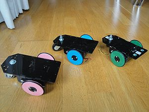
Skybots con las ruedas G3 v2
Contenido
[ocultar]Introducción
El montaje de la Rueda G3 v2.0 para el Skybot es muy sencillo. Además de la rueda impresa, sólo son necesarios dos tornillos y corona circular de un servo y una goma tórica de 55mm
| 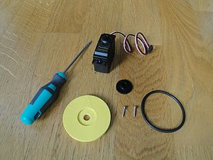
Inicio: Una rueda G3 v2 impresa, una goma tórica de 55mm de diámero, corona circular pequeña de un servo Futaba 3003 y dos tornillos del servo (click para ampliar) |
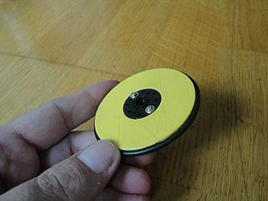
Fin: Una Rueda G3 v2 montada y lista para engancharse al servo (click para ampliar) |


Montaje
- Paso 1: Insertar la corona del servo en la rueda:
| 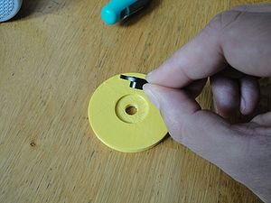 (click para ampliar) |
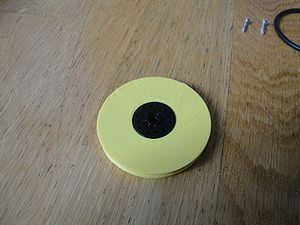 (click para ampliar) |


- Paso 2: Atornillar la corona del servo a la rueda
| 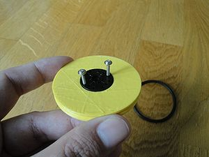 (click para ampliar) |
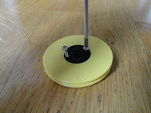 (click para ampliar) |


| 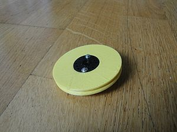 Tornillos colocados. Cara exterior (click para ampliar) |
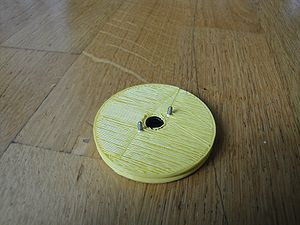 Tornillos colocados. Cara interior (click para ampliar) |


- Paso 3: Cortar los tornillos para que queden a ras de la rueda
| 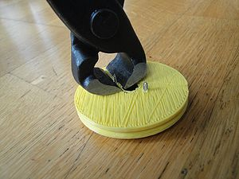 (click para ampliar) |
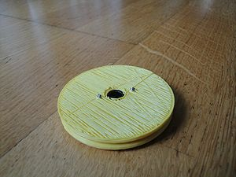 (click para ampliar) |


- Paso 4: Colocar la goma tórica
| 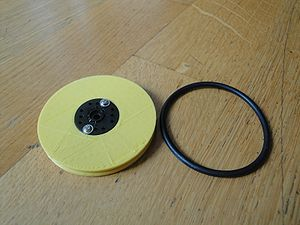 (click para ampliar) |
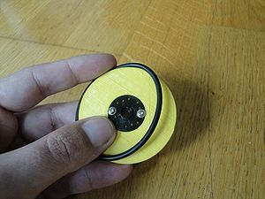 (click para ampliar) |


Usos de la rueda
| 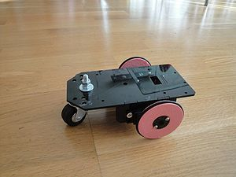 El skybot de la Barbie: con ruedas rosas (click para ampliar) |
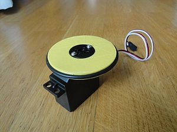 Rueda montada sobre un servo (click para ampliar) |


Enlaces
Autor
Licencia
| |
Noticias
- 14/Nov/2010: Primera versión de esta página